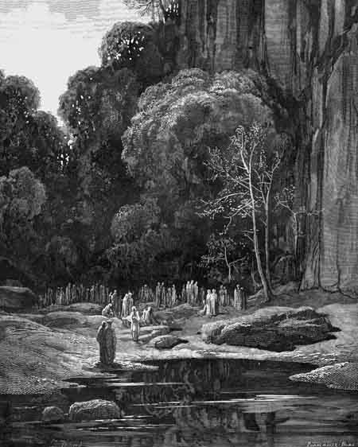

Canto VSegundo terraço - Arrependidos na hora da morte
|
|  |
| Vale dos excomungados. Ilustração de Gustave Doré (século XIX). |
Depois vieram duas almas, correndo, e perguntaram:
- Quem sois vós? - e a Virgílio - Por que a luz não o atravessa?
- Podeis retornar e dizer aos vossos que o corpo deste aqui é de carne verdadeira - respondeu o mestre -. Se a visão de sua sombra, presumo, os confundiu, agora o sabem, e lhes será conveniente honrá-lo.
Logo que o mestre terminou de falar, as duas almas correram de volta ao seu grupo.
- Essa gente toda agora virá te fazer perguntas. - comentou Virgílio - Presta atenção no que elas te disserem, mas não pares; continues a caminhar enquanto escutas.
- Ó alma que segues para a tua alegria - gritou um deles -, pára, por um momento, e olha se conheces algum de nós. Ah! Por que vais? Por que não paras? Olha-nos! Cada um de nós encontrou a morte violenta e foi pecador até o último instante, quando a luz do céu nos iluminou com seu perdão.
- Eu vos vejo mas não reconheço ninguém - respondi -. Se houver alguma coisa que eu possa fazer para agradar-vos, dizei, que eu farei.
- Se algum dia viajares entre a Romanha e o reino de Charles de Anjou, - falou o primeiro - pede aos povos de Fano que façam orações por mim, para que eu possa logo começar a purgar minha culpa. Eu fui daquelas terras, mas morri nas de Antenor, por ordem de Azzo de Este, que me odiava mais que o seu direito admitiria. Eles me surpreenderam em Oriaco, atolei nos juncos e vi surgir no brejo, um lago de sangue das minhas veias.
Depois que ele se calou, outra alma se aproximou, e falou:
- Que o teu desejo, que o traz ao alto monte, seja cumprido, mas, tende piedade e me ajuda também. Eu fui de Montefeltro, eu sou Buonconte. Ninguém mais quer saber de mim, nem mesmo a minha Giovanna, e por isso ando cabisbaixo entre os outros daqui.
- Buonconte, o que aconteceu contigo em Campaldino? - perguntei - Onde foi parar o teu corpo que nunca foi encontrado?
- Oh, tu saberás! - respondeu ele - Ao pé do Casentino corre um rio chamado Arquiano, que nasce nos Apeninos. Lá onde ele muda de nome eu cambaleava a pé, com a garganta perfurada, cobrindo o chão de sangue. Lá eu perdi a visão e a fala acabou quando pronunciei o nome de Maria. Lá eu caí, e só restou minha carne vazia. Digo a verdade e tu a anuncia: o anjo de Deus me levou, mas o do Inferno reclamou, insatisfeito: "Ó tu, do céu, por que me roubas? Tu levas este para o céu por causa uma lagrimazinha à toa? Ah, mas deixa que eu sei o que fazer com o corpo!" Então o demônio uniu o mal ao intelecto, movendo o fumo e o vento, pelo dom que a natureza lhe concede. Cobriu o vale de névoa tão escura que logo a chuva caiu numa tempestade. A água seguiu pelos fossos na direção do grande rio e formou uma enxurrada tão violenta que, ao chegar ao Arquiano, arrastou o meu corpo gelado, lançando-o para dentro do Arno; desfez a cruz que meus braços faziam sobre o peito, e jogou-me no fundo do seu leito.
- Por favor - pediu outra alma, quando Buonconte terminou - quando voltares ao mundo, lembra-te de mim! Eu sou Pia. Nasci em Siena, morri em Maremma, como bem sabe aquele que me cativou e desposou.